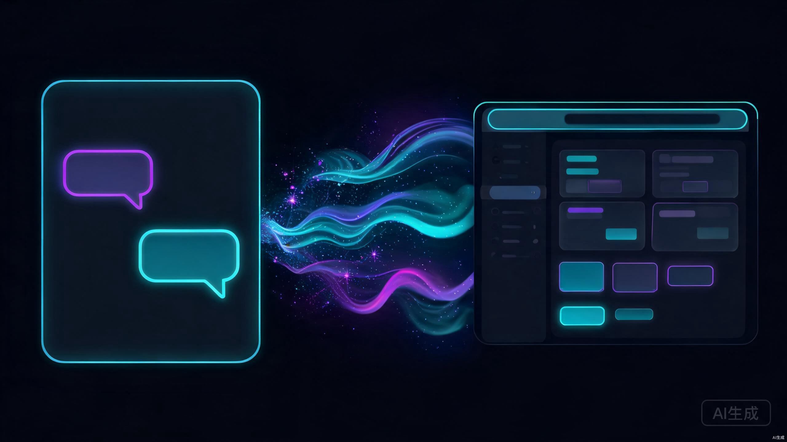

两周，没写一行代码，我做了一款 AI 工具 Two Weeks, Zero Lines of Code, I Built an AI Tool
两周前，我有一个想法。两周后，这个想法变成了一个真实可用的产品，部署在网上，有真实用户在使用，而且收到了正面反馈。 Two weeks ago, I had an idea. Two weeks later, that idea became a real, usable product deployed online with actual users and positive feedback.
整个过程中，我没有写过一行代码。不是夸大其词，不是标题党——是真的。从设计界面到实现功能，从调试 bug 到部署上线，每一步都是通过和 AI 对话完成的。 Throughout the entire process, I didn't write a single line of code. Not exaggerating, not clickbait — literally zero code. From designing the UI to implementing features, from debugging to deployment, every step was completed through conversation with AI.
这篇文章是我的完整复盘：我是怎么做的，用了什么工具，踩了哪些坑，以及最重要的——你也可以做到。 This article is my complete post-mortem: how I did it, what tools I used, what pitfalls I hit, and most importantly — you can do it too.
起因：帮朋友管理社交媒体内容，手动太累了 The Origin: Managing Social Media Content Manually Was Exhausting
我的一个朋友在做个人品牌，同时运营微信公众号、小红书和 Twitter 三个平台。每天的工作流程是这样的： A friend of mine is building a personal brand, running three platforms simultaneously: WeChat Official Account, Xiaohongshu (RED), and Twitter. Their daily workflow looked like this:
打开微信后台写一篇文章 → 复制到小红书重新排版 → 提炼精华发 Twitter → 记录发布时间和数据 → 回复评论 → 第二天重复。每天花在内容分发和管理上的时间至少 2-3 个小时，而且经常忘了哪个平台发过什么、哪个还没发。 Open WeChat backend to write an article → copy to Xiaohongshu and reformat → extract key points for Twitter → log publish times and metrics → reply to comments → repeat the next day. They spent at least 2-3 hours daily on content distribution and management, and constantly forgot what was posted where.
"你有没有试过那种感觉——明明每天都在忙，但回头一看，好像什么都没推进？" "Have you ever had that feeling — where you're busy all day, but when you look back, nothing seems to have moved forward?"
他的问题很典型：不是没有内容，而是内容分发和管理效率太低。市面上的社交媒体管理工具（比如 Buffer、Hootsuite）要么不支持中文平台，要么价格不便宜，要么功能太重不适合个人创作者。 His problem was typical: it wasn't a lack of content — it was extremely low efficiency in content distribution and management. Existing social media management tools (like Buffer, Hootsuite) either didn't support Chinese platforms, were too expensive, or were too heavy for individual creators.
我想：为什么不自己做一个呢？一个轻量的、针对中文创作者的社交媒体内容管理面板——能统一管理多个平台的内容日历、一键生成不同平台的格式、追踪发布数据。 I thought: why not build one myself? A lightweight social media content management dashboard designed for Chinese creators — one that could centrally manage content calendars across multiple platforms, auto-generate platform-specific formats, and track publishing metrics.
但我不会写代码。至少，不会写到能独立做出一个完整产品的程度。 But I couldn't write code. At least, not well enough to independently build a complete product.
所以，我决定让 AI 帮我写。 So, I decided to let AI write it for me.
工具链选择：三条路，我为什么选了第三条 Toolchain Choice: Three Paths, and Why I Chose the Third
在动手之前，我花了一个晚上研究有哪些工具可以用。我把它们分成了三类，做了一个对比： Before diving in, I spent an evening researching available tools. I categorized them into three approaches and made a comparison:
方案 A：纯聊天（ChatGPT / Claude 网页版） Option A: Pure Chat (ChatGPT / Claude Web)
- 零门槛，打开浏览器就能用Zero barrier to entry — just open a browser and go
- AI 生成代码后，需要自己创建文件、粘贴代码、安装依赖After AI generates code, you must manually create files, paste code, and install dependencies
- 无法直接运行和预览，改一个地方要重新复制粘贴整段代码Cannot run or preview directly — changing one thing means re-copying the entire code block
- 适合：写一段小脚本、解答编程问题Good for: small scripts, answering programming questions
方案 B：Cursor Option B: Cursor
- 能直接在项目中编辑和运行代码，体验很流畅Edit and run code directly in your project — very smooth experience
- 需要理解项目结构（src、components、pages 这些概念）Requires understanding project structure (concepts like src, components, pages)
- 有一定学习曲线，至少需要知道终端是什么Has a learning curve — at minimum, you need to know what a terminal is
- 适合：有一定技术基础或愿意深入学习的人Good for: people with some technical background or willingness to learn deeply
方案 C：v0.dev + Vercel ✓ Option C: v0.dev + Vercel ✓
- v0.dev 直接在浏览器中生成界面，所见即所得v0.dev generates UI directly in the browser — WYSIWYG
- 设计感强，生成的界面开箱即用，不需要调样式Strong design sense — generated UIs work out of the box, no styling adjustments needed
- 一键导出到 Vercel 部署，全程在浏览器完成One-click export to Vercel for deployment — entire workflow in the browser
- 最适合零基础：不需要安装任何软件，不需要懂终端Best for absolute beginners: no software installation, no terminal knowledge needed
最终我选了方案 C：v0.dev + Vercel。原因很简单：我对自己的定位很清楚——我现阶段不想学编程，我只想尽快把产品做出来。v0.dev 让我可以用自然语言描述需求，直接在浏览器里看到生成的界面，满意了就导出，不满意就继续对话调整。整个过程不需要打开任何代码编辑器，不需要敲任何命令。 I ultimately chose Option C: v0.dev + Vercel. The reason is simple: I was clear about my positioning — at this stage, I didn't want to learn programming; I just wanted to ship the product as fast as possible. v0.dev let me describe requirements in natural language, see the generated UI directly in the browser, export when satisfied, and keep chatting to refine when not. The entire process required no code editor, no terminal commands whatsoever.
五步实战：从想法到上线 Five-Step Walkthrough: From Idea to Launch
用 v0.dev 描述需求，生成初始界面 Describe Your Requirements in v0.dev, Generate the Initial UI
打开 v0.dev，在输入框里用自然语言描述我想要的产品。我第一次输入的提示词是这样的： I opened v0.dev and described the product I wanted in natural language. My first prompt looked like this:
帮我做一个社交媒体内容管理面板（Social Media Content Dashboard），功能如下： 1. 顶部导航栏，显示产品名称 "ContentFlow" 和用户头像 2. 左侧边栏有菜单：内容日历、内容草稿、数据统计、平台管理 3. 主区域显示一个周历视图，每个日期格子里显示当天要发布的内容卡片 4. 每个内容卡片包含：标题、目标平台（微信/小红书/Twitter 的图标）、发布时间、状态（已发布/草稿/待审核） 5. 右上角有一个 "+ 新建内容" 按钮 6. 配色用深色主题，主色调偏蓝紫，现代感强 用 React + Tailwind CSS 实现，组件化结构。Build me a Social Media Content Dashboard with these features: 1. Top navbar showing the product name "ContentFlow" and a user avatar 2. Left sidebar with menu items: Content Calendar, Drafts, Analytics, Platform Management 3. Main area shows a weekly calendar view, with content cards in each date cell 4. Each content card includes: title, target platform (WeChat/Xiaohongshu/Twitter icons), scheduled time, status (published/draft/pending review) 5. A "+ New Content" button in the top-right corner 6. Dark theme with blue-purple accent colors, modern feel Implement with React + Tailwind CSS, component-based architecture.
大约等了 30 秒，v0.dev 给出了第一版界面。说实话，第一次看到结果的时候我有点惊讶——它生成的界面比我预想的还好。布局合理，配色舒服，甚至已经加了一些交互动效（hover 效果、过渡动画）。 After about 30 seconds, v0.dev produced the first version of the UI. Honestly, I was a bit surprised when I first saw the result — the interface it generated was better than I had imagined. The layout was logical, the colors were pleasing, and it even included some interactive effects (hover states, transition animations).
当然，还不完美。日历视图的排版有些紧凑，内容卡片的字体太小，侧边栏缺少选中态。但这些都可以通过继续对话来解决。 Of course, it wasn't perfect. The calendar layout was a bit cramped, the font on content cards was too small, and the sidebar was missing active states. But all of these could be fixed by continuing the conversation.
导出代码到本地（或直接部署） Export Code Locally (or Deploy Directly)
v0.dev 生成的项目可以直接通过 "Add to Codebase" 功能推送到 GitHub，也可以下载 ZIP 到本地。我选择了推送到 GitHub 仓库——因为后续用 Vercel 部署时，Vercel 可以直接从 GitHub 拉取代码，更新时只需要 push 新代码就会自动重新部署。 Projects generated by v0.dev can be pushed directly to GitHub via the "Add to Codebase" feature, or downloaded as a ZIP. I chose pushing to a GitHub repo — because when deploying with Vercel later, Vercel can pull code directly from GitHub, and updates only require pushing new code to trigger automatic redeployment.
导出后，我用了 5 分钟在本地打开项目看了一下文件结构。虽然我不用写代码，但大致了解项目有哪些文件是有帮助的——这样后续和 AI 对话时，我能更准确地描述要改哪里。 After exporting, I spent about 5 minutes opening the project locally to glance at the file structure. Even though I wasn't writing code, having a rough understanding of what files exist was helpful — it let me describe more accurately what needed to change in subsequent AI conversations.
# 导出后的项目结构大致长这样 ContentFlow/ ├── app/ │ ├── layout.tsx │ ├── page.tsx │ └── globals.css ├── components/ │ ├── Sidebar.tsx │ ├── Calendar.tsx │ ├── ContentCard.tsx │ └── NewContentModal.tsx ├── package.json └── tailwind.config.ts
用 Claude / ChatGPT 对话迭代功能 Iterate on Features via Claude / ChatGPT Conversations
这是整个过程中花时间最多的阶段，也是最有趣的阶段。我每天晚上花 1-2 个小时和 AI 对话，逐步添加和完善功能。 This was the most time-consuming phase of the entire process, and also the most enjoyable. I spent 1-2 hours every evening conversing with AI, gradually adding and refining features.
我的迭代方式很简单：描述问题或需求 → AI 给出代码修改 → 我复制到项目中 → 本地预览看效果 → 提出新的修改意见。循环往复。 My iteration process was simple: describe the problem or requirement → AI provides code changes → I paste into the project → preview locally → suggest new modifications. Repeat.
举几个真实的迭代例子： Here are a few real iteration examples:
ContentCard 组件现在太大了，在一个日历格子里放不下多张卡片。 帮我做两个调整： 1. 卡片默认只显示标题和平台图标，高度压缩到 40px 2. 点击卡片后展开显示完整信息（发布时间、状态、内容摘要） 用一个 expand/collapse 的交互方式。The ContentCard component is too large — multiple cards don't fit in a single calendar cell. Make two changes: 1. By default, cards only show the title and platform icon, compressed to 40px height 2. Clicking a card expands it to show full info (scheduled time, status, content summary) Use an expand/collapse interaction pattern.
我想在数据统计页面加一个简单的折线图，显示过去 7 天每天发布的文章数量。 用 recharts 库来实现。X 轴是日期，Y 轴是数量。线条用渐变色。 数据先用 mock 数据，后续我会替换成真实的。I want to add a simple line chart to the Analytics page showing the number of articles published per day over the past 7 days. Use the recharts library. X-axis is date, Y-axis is count. Use a gradient line color. Use mock data for now — I'll replace it with real data later.
两周下来，我大概和 AI 进行了50 多轮对话，涵盖了界面调整、功能添加、交互优化、响应式适配等各个方面。每一次对话都让产品更接近我心中的样子。 Over two weeks, I had approximately 50+ conversation rounds with AI, covering UI adjustments, feature additions, interaction optimization, responsive design, and more. Each conversation brought the product closer to what I envisioned.
用 Vercel 一键部署 One-Click Deploy with Vercel
产品功能做到基本满意后，部署上线非常简单： Once I was satisfied with the product features, deploying online was incredibly simple:
# 1. 把最新代码推送到 GitHub # （v0.dev 导出时已经自动创建好了仓库） git add . git commit -m "v1.0: content calendar + analytics + draft management" git push
然后打开 vercel.com，用 GitHub 登录，点击 "New Project"，选择刚才的仓库，点击 "Deploy"。两分钟后，我的产品就上线了。 Then I opened vercel.com, signed in with GitHub, clicked "New Project," selected the repository, and clicked "Deploy." Two minutes later, my product was live.
Vercel 免费版对于个人项目完全够用。它自动配置了 HTTPS、CDN 加速，还给了我一个 contentflow.vercel.app 的域名。后续每次我 push 代码到 GitHub，Vercel 都会自动重新部署。
Vercel's free tier is more than sufficient for personal projects. It automatically configures HTTPS, CDN acceleration, and gave me a contentflow.vercel.app domain. Every time I push code to GitHub going forward, Vercel automatically redeploys.
分享给朋友测试，根据反馈继续用 AI 改进 Share with Friends for Testing, Improve with AI Based on Feedback
上线第一天，我把链接发给了那个朋友和另外几个做内容创作的朋友。他们的反馈很快： On day one of launch, I sent the link to that friend and a few other content-creator friends. Their feedback came quickly:
"能不能加一个拖拽排序功能？我想调整发布顺序。" "Can you add drag-and-drop reordering? I want to rearrange the publishing order."
"手机上打开侧边栏会遮挡内容，能不能改成底部 Tab 导航？" "The sidebar covers content on mobile — can you switch to a bottom tab navigation?"
"新建内容的时候，能不能让我选择要同步到哪些平台？然后自动生成不同平台对应的格式？" "When creating new content, can I choose which platforms to sync to? And auto-generate platform-specific formats?"
我把这些反馈整理了一下，每天晚上挑 1-2 个优先级最高的，让 AI 帮我实现。这个循环持续了一周，产品从一个 "勉强能用" 的原型，进化成了 "真的好用" 的工具。 I organized this feedback and picked the 1-2 highest priority items each evening, having AI implement them. This cycle continued for a week, and the product evolved from a "barely usable" prototype into a "genuinely useful" tool.
用户反馈：手机端侧边栏体验不好。帮我做以下调整： 1. 在移动端（屏幕宽度 < 768px）隐藏侧边栏 2. 改为底部固定的 Tab 导航栏，包含四个图标：日历、草稿、统计、设置 3. 用 lucide-react 图标库 4. 切换 Tab 时内容区域有过渡动画User feedback: sidebar experience is poor on mobile. Please make these adjustments: 1. Hide the sidebar on mobile (screen width < 768px) 2. Replace with a fixed bottom tab bar containing four icons: Calendar, Drafts, Analytics, Settings 3. Use the lucide-react icon library 4. Add transition animations when switching tabs
踩坑实录：三个最疼的跟头 Pitfalls I Hit: The Three Most Painful Lessons
这是我踩到的第一个坑，也是最常见的。有一次我让 AI 帮我加一个“新建内容”的弹窗组件，它生成了一段看起来很规整的代码，但我复制进项目后，页面直接白屏了。打开浏览器控制台，看到一堆红色报错。原因是 AI 引用了一个项目中不存在的依赖包，而且组件的 import 路径也写错了。 This was the first pitfall I hit, and it's the most common one. Once I asked AI to add a "New Content" modal component, and it generated a tidy-looking block of code. But after I pasted it into the project, the page went completely white. I opened the browser console and saw a bunch of red errors. The cause: AI referenced a dependency that didn't exist in the project, and the component's import path was wrong.
解决方法：把报错信息复制给 AI，它基本能自己修好。关键是不要自己猜，直接把错误信息嗂给 AI。 Solution: paste the error message back to AI — it can usually fix its own mistakes. The key is not to guess on your own; just feed the error information directly to AI.
我最初对 AI 说“帮我做一个内容管理工具”，结果它生成了一个类似 Notion 的富文本编辑器——跟我想的完全不是一回事。后来我学会了，描述需求时要具体到：有哪些页面、每个页面放什么、数据长什么样、用户操作流程是怎样的。 At first I told AI "help me build a content management tool," and it generated something like a Notion-style rich text editor — completely different from what I had in mind. Later I learned that when describing requirements, you need to be specific about: what pages exist, what's on each page, what the data looks like, and what the user flow is.
这其实不是 AI 的问题——你跟人类程序员说“做个内容管理工具”，他们同样会问你十个问题。区别是，人类程序员会反问，而 AI 会自己脑补，补的方向不一定对。 This isn't really an AI problem — if you tell a human programmer "build a content management tool," they'd ask you ten questions too. The difference is that human programmers will ask follow-up questions, while AI will fill in the blanks itself, and not always in the right direction.
最终部署时，我遇到了一个问题：本地运行正常的项目，推到 Vercel 后报错了。原因是我在代码里用了一个环境变量 NEXT_PUBLIC_API_URL，但没有在 Vercel 的项目设置里配置这个变量。当时我完全不知道什么是环境变量，花了半天才搞明白。
During the final deployment, I ran into an issue: a project that ran perfectly locally broke after pushing to Vercel. The cause was that I used an environment variable NEXT_PUBLIC_API_URL in the code but hadn't configured this variable in Vercel's project settings. At the time, I had no idea what environment variables were, and it took me half a day to figure it out.
教训：如果你用的是 v0.dev + Vercel 路线，尽量避免在代码里使用环境变量。所有配置都硬编码在代码里，或者用默认值。等你学会了环境变量的概念再用也不迟。 Lesson: if you're using the v0.dev + Vercel route, try to avoid using environment variables in your code. Hardcode all configurations or use default values. It's never too late to learn about environment variables later.
两周后的成果 The Results After Two Weeks
上线两周后，ContentFlow 有了 8 个活跃用户（都是我朋友和他们的朋友）。虽然数字不大，但每一个都是真实的、主动使用的用户，不是我自己刷出来的。 Two weeks after launch, ContentFlow had 8 active users (all friends and friends-of-friends). While the number isn't large, every single one was a real, actively engaged user — not inflated numbers.
那个最初触发这个项目的朋友，现在每天用 ContentFlow 管理他的三个平台内容。他告诉我，以前每天要花 2-3 小时在内容管理上，现在 压缩到了 30 分钟以内。光这个效率提升，就值了。 That friend who originally triggered this project now uses ContentFlow daily to manage content across his three platforms. He told me that what used to take 2-3 hours daily for content management has been compressed to under 30 minutes. Just that efficiency gain alone made it all worthwhile.
成本分析：传统开发 vs AI 辅助开发 Cost Analysis: Traditional Development vs. AI-Assisted Development
传统开发 Traditional Development
- 时间：4-8 周（从设计到上线）Time: 4-8 weeks (from design to launch)
- 金钱：如果外包，至少 1-3 万元Money: if outsourced, at least 10,000-30,000 RMB
- 如果自己学，前期投入 1-3 个月打基础If learning yourself, 1-3 months of groundwork upfront
- 维护和迭代同样需要大量时间Maintenance and iteration also require significant time
AI 辅助开发（我的路径） AI-Assisted Development (My Path)
- 时间：2 周（含学习和调试）Time: 2 weeks (including learning and debugging)
- 金钱：v0.dev Pro 订阅 $20/月，Vercel 免费Money: v0.dev Pro subscription $20/month, Vercel free
- 不需要任何编程基础知识No programming fundamentals required
- 迭代也通过 AI 对话完成，效率很高Iteration also done through AI conversation, highly efficient
当然，这个对比不是绝对的。AI 辅助开发有它的局限——产品复杂度上不去，定制化能力有限，出了奇怪的问题你可能会束手无策。但对于验证想法、做 MVP、解决小范围痛点来说，AI 辅助开发的性价比是碾压级的。 Of course, this comparison isn't absolute. AI-assisted development has its limitations — product complexity has a ceiling, customization is limited, and you might be helpless when strange issues arise. But for validating ideas, building MVPs, solving small-scale pain points, the cost-effectiveness of AI-assisted development is overwhelmingly superior.
核心观点：AI 不是替代开发者，而是让不会开发的人也能做出东西 Core Thesis: AI Doesn't Replace Developers — It Lets Non-Developers Build Things
AI 时代的核心能力不再是「写代码」，而是「想清楚要做什么」和「把需求说清楚」。 The core competency of the AI era is no longer "writing code" — it's "knowing what you want to build" and "articulating requirements clearly."
这不意味着程序员会失业。复杂系统、高性能应用、安全敏感的项目——这些仍然需要真正的工程师。但对于个人创业者、产品经理、设计师、内容创作者来说，AI 打开了一扇以前紧锁的门。 I often see a debate: will AI replace programmers? I think that's the wrong question. AI doesn't replace programmers — it replaces the state of "not being able to code, therefore not being able to build things." In the past, if you couldn't write code, your ideas stayed trapped in your head. Now, as long as you can clearly articulate your idea, AI can help turn it into reality.
This doesn't mean programmers will lose their jobs. Complex systems, high-performance applications, security-sensitive projects — these still require real engineers. But for individual entrepreneurs, product managers, designers, and content creators, AI has opened a door that was previously locked shut.
给新手的三个建议 Three Tips for Beginners
不要想「我要做一个什么产品」，而是想「我日常有什么事情特别烦，有没有工具能帮我解决」。前者容易做出没人用的东西，后者做出的一定有人需要——至少你自己需要。 Don't think "what product should I build?" Instead think "what annoys me daily, and is there a tool that could solve it?" The former leads to products nobody uses; the latter produces something at least one person needs — you.
AI 不会读心术。"帮我做一个 App" 和 "帮我做一个深色主题的内容日历页面，左侧有导航栏，主区域显示 7 天的周历视图，每个格子里有标题和状态标签」——这两种描述，得到的结果天差地别。学会像跟外包团队提需求一样跟 AI 提需求。 AI can't read minds. "Build me an app" versus "Build me a dark-themed content calendar page with a navigation bar on the left, a 7-day weekly view in the main area, and each cell containing a title and status tag" — the results from these two descriptions are worlds apart. Learn to write requirements for AI the way you'd write them for an outsourced team.
我的 ContentFlow 上线时还有很多不完美的地方。但如果我等到它完美了再上线，可能永远都不会上线。先让真实用户用起来，他们的反馈会告诉你什么最重要。AI 让迭代的成本极低——今天发现的问题，明天就能修好。 ContentFlow was far from perfect when it launched. But if I had waited until it was perfect, it might never have launched at all. Get real users using it first — their feedback will tell you what matters most. AI makes iteration incredibly cheap — a problem discovered today can be fixed tomorrow.
别再等了，现在就开始 Stop Waiting — Start Now
写这篇文章的时候，ContentFlow 已经上线一个月了。它的用户从 8 个增长到了 20 多个，我朋友甚至开始推荐给他的同行使用。我还在持续用 AI 迭代新功能——上周刚加了「一键复制内容到不同平台格式」的功能，用户反馈很好。 As I write this, ContentFlow has been live for a month. Its users have grown from 8 to over 20, and my friend has even started recommending it to peers. I'm still using AI to iterate on new features — just last week I added a "one-click copy content to different platform formats" feature, and user feedback has been great.
我想说的是：你不需要等到「学会编程」才能开始做东西。AI 已经把门槛降到了历史最低。你需要的只是： What I want to say is: you don't need to wait until you "learn programming" to start building things. AI has already lowered the barrier to an all-time low. All you need is:
1. 一个你真正想解决的问题 1. A problem you genuinely want to solve
2. 能把这个问题用自然语言描述清楚 2. The ability to describe that problem clearly in natural language
3. 打开 v0.dev，开始对话 3. Open v0.dev, start the conversation
就这三步。没有第四步。 Just those three steps. There is no step four.
两周后，也许你也会写一篇类似的复盘文章。不是标题党——是真的。 Two weeks from now, maybe you'll be writing a similar post-mortem. Not clickbait — for real.